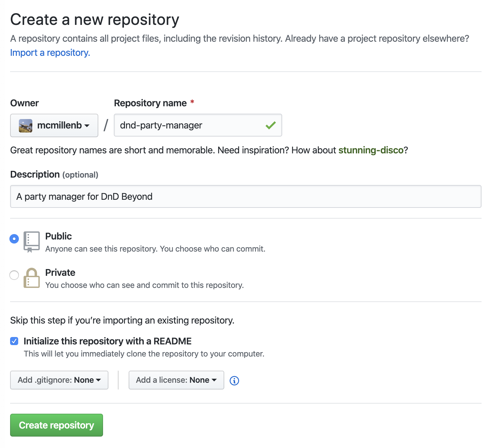
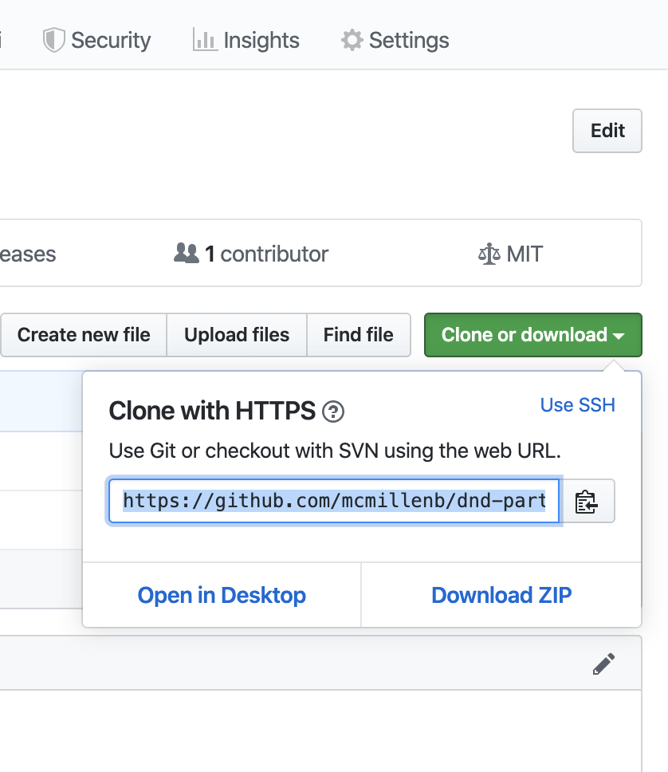

Push a Project up to GitHub
GitHub is a platform for hosting source code using git for source control. A lot of people use it.
It's free to use and allows you to keep your code online and integrates with a ton of other services. It's the default place to put your code if you're wanting to start a new codebase (a couple others are GitLab and Bitbucket).
Create a GitHub account
First, we'll want to create a GitHub account if you don't already have one. Go to https://github.com/join to do that.
Make a New Repository
Once you have a GitHub account, you can create a new repository in your account by going to https://github.com/new and then filling out the form. Make it anything you want, but it should look something like this:

Clone Your Repo to Your Machine
Once you've created your repo, you should be able to see a "Clone or download" button in the top right of the repo's page. Like this:

Click that, copy the url that pops up, and then execute this command in your terminal:
git clone https://github.com/{username}/{project_name}.git [project_name]
For example:
git clone https://github.com/mcmillenb/dnd-party-manager.git dnd-party-manager
This will "clone" your repo into a directory (dnd-party-manager in my example), which effectively copies all of the files in the repo to that directory and initialize git with the entire history of your project.
Push a Change to GitHub
Now that you've gotten your repo code cloned onto your machine, make a change to a file (the README.md file for example) and then execute the following commands in your terminal:
git add .
git commit -m "update the README.md file"
git push
This should push the change up to GitHub, and you should be able to see the change when you visit your project's url again.